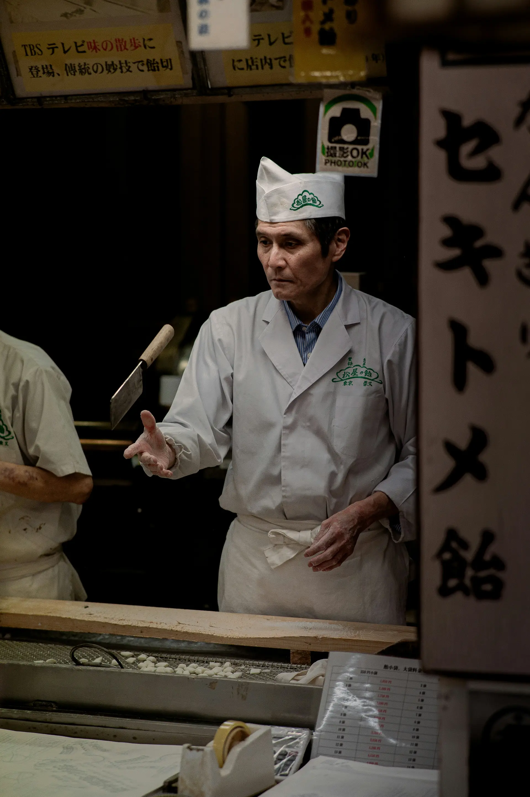

รู้สึกโดดเดี่ยว ถูกบูลลี่ หรือไม่กล้าเป็นตัวของตัวเอง เรื่องราวสะท้อนการค้นหาตัวตนและการยอมรับความแตกต่างผ่านสัญลักษณ์ของ “ปีศาจกลางคืน” ที่แท้จริงแล้วคือด้านอ่อนแอในใจมนุษย์ ประเด็นทางจิตวิทยาและสังคม การเยียวยาความรู้สึก ให้เข้าใจตนเองและผู้อื่นได้ลึกซึ้งยิ่งขึ้น
“ความเข้าใจ การเยียวยาใจ ไม่ได้เป็นเพียงนิยายแฟนตาซี แต่เป็นกระจกสะท้อนความจริงของมนุษย์ที่ต้องซ่อนด้านอ่อนไหวไว้ภายใต้หน้ากากของสังคม เรื่องราวทำให้ผู้อ่านได้ตระหนักถึงผลของการบูลลี่และการเมินเฉยต่อความทุกข์ของผู้อื่น ขณะเดียวกันก็ปลอบประโลมคนที่รู้สึก “แตกต่าง” ว่าการเป็นตัวเองไม่ใช่เรื่องผิด หนังสือจึงมอบมุมมองใหม่เกี่ยวกับความอ่อนแอ ความกล้า และการยอมรับตัวเอง
ในขณะที่อ่านจะถูกพาเข้าสู่ความรู้สึกที่ทั้งเศร้า อ่อนโยน และสะเทือนใจในเวลาเดียวกัน ช่วงต้นของเรื่องอาจทำให้รู้สึก “อึดอัด” จากบรรยากาศในโรงเรียนที่เต็มไปด้วยการบูลลี่และความเงียบของผู้คน แต่เมื่อเรื่องดำเนินไป เริ่มตัวละครมากขึ้น เห็นความเปราะบางที่ซ่อนอยู่ใต้เปลือกความเข้มแข็ง และเริ่มตั้งคำถามกับตัวเองว่า เราเคยเป็นคนที่เมินเฉยต่อความเจ็บปวดของใครบ้างหรือไม่ เมื่ออ่านจนจบ หลายคนมักจะรู้สึกเหมือนมีบางสิ่งอบอุ่นค่อย ๆ ก่อตัวขึ้นในใจเป็นความเข้าใจทั้งต่อตัวเองและต่อผู้อื่น หนังสือไม่ได้ทำให้เศร้าเพียงอย่างเดียว แต่ทำให้ผู้อ่าน “รู้สึกอยากอ่อนโยนขึ้น” ต่อโลกและหัวใจของคนรอบข้าง.
"ถ้าคุณเคยถูกทำให้รู้สึกแปลกแยก… เรื่องนี้อาจสะท้อนหัวใจคุณได้มากกว่าที่คิด" ในยามค่ำคืน อัจจี้คุงต้องคำสาปให้กลายเป็นปีศาจ แต่ปีศาจตัวจริง...อาจไม่ได้มีเขา หรือเล็บแหลมเสมอไป เมื่อเขากลับมายังโรงเรียนกลางดึกและพบกับยาโนะซัง ความลับถูกเปิดเผย และอดีตอันเจ็บปวดที่เขาถูกกลั่นแกล้ง ก็เริ่มคลี่คลายทีละชั้น ปีศาจยามวิกาล ไม่ใช่แค่เรื่องแฟนตาซีวัยรุ่น แต่มันพูดถึง “การบูลลี่” อย่างตรงไปตรงมา สะท้อนว่า... ไม่มีใครควรถูกตัดสิน เพียงเพราะเขาแตกต่าง บางคนแม้ไม่ใช่ปีศาจ... แต่จิตใจกลับน่ากลัวกว่า ขณะที่อัจจี้คุง แม้กลายร่างเป็นปีศาจ... แต่หัวใจยังอ่อนโยนเสมอ ใครชอบนิยายวัยรุ่นที่มีทั้งความลึก ความลึกลับ และความจริงของสังคม เล่มนี้น่าหยิบขึ้นมาอย่างยิ่ง
ปีศาจยามวิกาล คือเรื่องราวของอัจจี้คุง เด็กผู้ชายคนหนึ่งที่ทุกคืนเขาจะกลายร่างเป็นปีศาจ แต่แล้วคืนหนึ่งมีเหตุให้อัจจี้คุงต้องกลับมายังโรงเรียน เมื่อมาถึง อัจจี้คุงก็พบว่าเขาไม่ได้อยู่เพียงลำพัง เขาพบยาโนะซัง เพื่อนนักเรียนหญิงคนหนึ่งในชั้นอยู่ที่โรงเรียนในเวลากลางคืนด้วย แล้วเรื่องราวต่างๆ ก็เริ่มต้นขึ้นเมื่อยาโนะซังพบอัจจี้คุงในร่างปีศาจแพรวสำนักพิมพ์
“ปีศาจ” เป็นสัญลักษณ์ของด้านในใจที่โหยหาการยอมรับ
ถ่ายทอดความโดดเดี่ยว ความอ่อนแอ และความเจ็บปวดของมนุษย์อย่างอ่อนโยนและจริงใจ
“ใครกันแน่ที่เป็นปีศาจ”